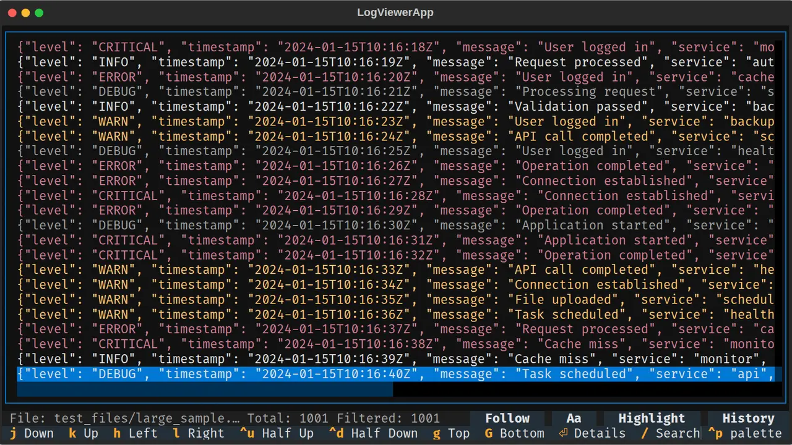

JSON Logs Viewer
Keyboard-driven terminal app for reading JSONL logs, with Vim-style navigation, a query language for filtering and smooth scrolling through big files.
Queries match fields and nested paths, combine with AND, OR and NOT, and compare numbers and timestamps. You choose which fields appear as columns, follow a file while it’s being written, and open any entry as highlighted JSON.
- Python
- Textual
- Rich
- Pydantic
- pytest